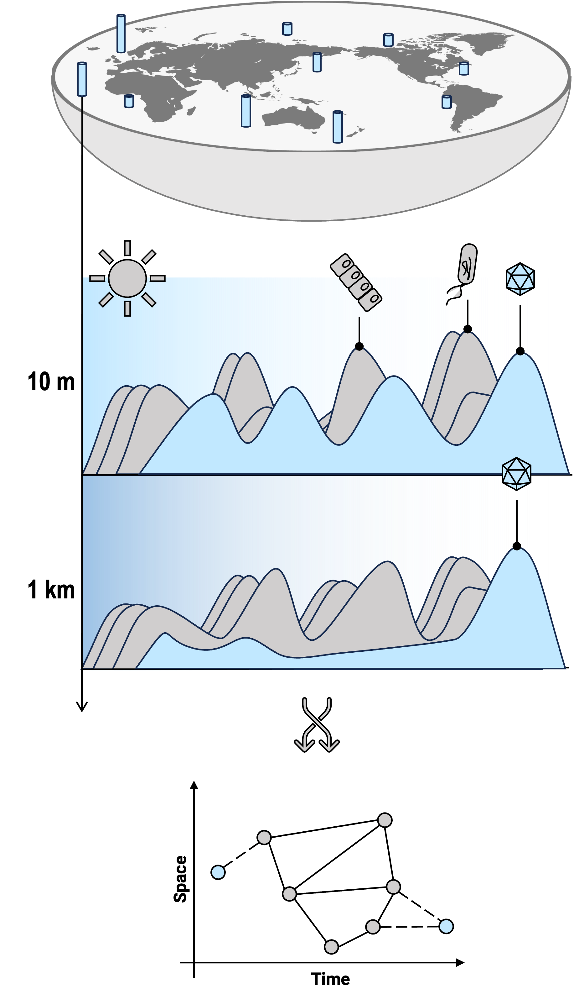

Protist dsDNA virus (ICTV)
Virus Diversity
Currently, the ICTV database contains 14,690 experimentally validated virus species. However, with the advent of metagenomics, we can now detect many viruses that were previously unculturable. Despite this, detecting viruses still presents significant challenges, including but not limited to the following:
- The abundance of viruses in the environment is much lower than that of cellular organisms: This means we need to increase sequencing depth to capture signals from some rare viruses.
- Viruses exhibit high diversity but lack a universal marker gene like cellular organisms: This makes it difficult to use a single gene to detect all viruses.
- Viruses have higher mutation rates compared to cellular organisms: Especially RNA viruses, which evolve rapidly, leading to significant sequence variation even within the same species, increasing the complexity of detection.
- Viral genomes contain many repetitive sequences and intraspecies diversity: This makes genome assembly challenging, particularly in short-read sequencing, where obtaining a complete genome is difficult.
- There are few reference genomes: Currently, we can only detect viruses that are similar to known viruses. Many newly discovered viruses may lack corresponding reference genomes, which affects detection accuracy.
Ecology of giant viruses
Virus ecology is an essential field that unravels the complex interactions between viruses, their hosts, and the environment. With the increasing recognition of viruses' ecological roles, I am motivated to delve deeper into this area for several reasons:
- Understanding Biodiversity: The immense diversity of viruses in various ecosystems influences microbial communities and biogeochemical cycles, yet much remains unexplored.
- Impact on Health and Disease: Viruses are crucial in shaping host populations and ecosystems, which can have direct implications for human health, agriculture, and wildlife conservation.
- Advancements in Detection Technologies: With metagenomics, we can identify previously unculturable viruses, but challenges like low abundance and high mutation rates complicate this task.
- Ecological Insights: Studying viral interactions can provide ultimate insights into ecological dynamics, such as predator-prey relationships and nutrient cycling.
- Global Change Adaptation: Understanding virus ecology helps predict how viral populations might shift in response to environmental changes, aiding in conservation and management strategies.

Protist dsDNA virus (ICTV)
Protist dsDNA virus (ICTV)
Protist dsDNA virus (ICTV)
Ecology of giant viruses
Virus evolution is a captivating field that sheds light on the dynamic nature of viral genomes and their adaptability. My motivation to explore this area stems from several key factors:
- Rapid Mutation Rates: Viruses, particularly RNA viruses, evolve at astonishing rates, providing unique opportunities to study evolutionary processes in real-time.
- Co-evolution with Hosts: Understanding how viruses adapt alongside their hosts reveals important insights into the co-evolutionary dynamics that shape ecosystems.
- Emergence of New Strains: The ongoing emergence of new viral strains poses significant challenges to public health, necessitating a deeper understanding of evolutionary mechanisms.
- Phylogenetics and Lineage Tracing: Analyzing viral phylogenies allows us to reconstruct the evolutionary history of viruses, aiding in the identification of potential zoonotic threats.
- Implications for Biotechnology: Insights gained from viral evolution can inform biotechnological applications, such as vaccine development and gene therapy.